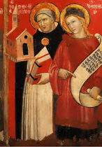

|  |
|---|
[70541] De 36 articulis, pr. Lectis litteris vestris, in eis inveni articulorum multitudinem numerosam, super quibus a me responderi infra quatriduum vestra caritas postulabat. Et quamvis essem in aliis plurimum occupatus, ne tamen deessem vestrae dilectionis obsequio, dilatis parumper aliis quibus me intendere oportebat, quaestionibus a vobis propositis proposui per singula respondere.
[70542] De 36 articulis, a. 1 arg. Primus articulus est quod Angeli sunt motores caelestium corporum.
[70543] De 36 articulis, a. 1 ad arg. Super quo duxi taliter respondendum quod hoc non solum a philosophis multipliciter est probatum, verum etiam a sacris doctoribus evidenter asseritur. Dicit enim Augustinus in III de Trinitate, quod sicut corpora grossiora et inferiora per subtiliora et superiora quodam ordine reguntur, ita omnia corpora per spiritum vitae rationalem. In libro etiam LXXXIII quaestionum dicit: unaquaeque res visibilis in hoc mundo habet potestatem angelicam sibi praepositam. Gregorius etiam dicit in IV dialogorum quod in hoc mundo visibili nihil nisi per creaturam invisibilem disponi potest.
[70544] De 36 articulis, a. 2 arg. Secundus articulus est quod aliqui estimaverunt semper infallibiliter hoc esse probatum.
[70545] De 36 articulis, a. 2 ad arg. Ad hoc respondeo quod libri philosophorum hujusmodi probationibus abundant, quas ipsi demonstrationes putant; mihi igitur videtur quod demonstrative probari potest quod ab aliquo intellectu corpora caelestia moveantur, vel a Deo immediate vel mediantibus Angelis; sed quod mediantibus Angelis ea moveat, magis congruit ordini rerum, quem Dionysius infallibilem asserit, ut inferiora a Deo per media secundum cursum communem administrentur.
[70546] De 36 articulis, a. 3 arg. Tertius articulus est quod Angeli movent caelestia corpora suo imperio, potestate sibi a Deo tradita.
[70547] De 36 articulis, a. 3 ad arg. Super quo quid dubium esse possit, plene non video. Non enim aestimo aliquem dubitare quin omne quod Angeli faciunt, operentur potestate a Deo donata. Si vero hoc convertatur in dubium quod dicitur eos movere caelestia corpora suo imperio, irrationabilis dubitatio videtur. Non enim possunt movere aliquod corpus per contactum quantitatis, cum sint incorporei, sed per contactum virtutis. Nihil autem est altius in Angelis quam eorum intellectus, cum et ipsi a Dionysio intellectus vel mentes nominentur: unde eorum motiones a virtute intellectus procedunt. Ipsa autem conceptio intellectus, secundum quod habet efficaciam aliquid transmutandi, imperium nominatur; unde si movent, nullo modo nisi per imperium movere possunt.
[70548] De 36 articulis, a. 4 arg. Quartus articulus est quod Angeli moventes corpora caelestia sint de ordine virtutum.
[70549] De 36 articulis, a. 4 ad arg. Hoc quidem et mihi videtur: praecipue si ordo virtutum dicatur medius ordo secundae hierarchiae, ut Dionysius vult. Hic enim ordo primum locum tenet inter exequentes exteriora ministeria: unde et Dionysius dicit VIII cap. caelestis hierarchiae quod nomen virtutum ostendit divinam quandam et inconcussam fortitudinem ad omnes deiformes operationes. Nihil autem in exterioribus ministeriis majus esse videtur quam dispositio universalium causarum: unde maxime videtur administratio caelestium corporum ad ordinem virtutum pertinere. Unde Origenes exponens illud Matth. XXIV, 29 virtutes caelorum commovebuntur, dicit quod conveniens est caelorum rationabiles virtutes pati stuporem, remotas scilicet a primis functionibus suis. Hoc tamen omnino asserendum non videtur.
[70550] De 36 articulis, a. 5 arg. Quintus articulus est quod Angelus suo imperio potest movere totam molem terrae usque ad globum lunae.
[70551] De 36 articulis, a. 5 ad arg. Istud enim asserendum non videtur. Virtutes enim creaturarum se extendunt ad naturales effectus: et ideo Angeli caelestia corpora movere possunt secundum motus convenientes naturis eorum; aliis autem motibus ea movere non possent secundum propriam virtutem, sed hoc divinitus miraculose fieri potest. Potest autem fieri non solum virtute Angeli, sed etiam virtute hominis quod aliqua pars terrae per violentiam sursum feratur: sed quod totum unum elementum extra suum ordinem naturalem ponatur, non credo subjacere angelicae potestati: et quod virtus Angeli sit infinita inferius, non est sic intelligendum quod non determinetur ad determinatos effectus, sed quia in suis effectibus producendis non patitur lassitudinem aut defectum.
[70552] De 36 articulis, a. 6 arg. Sextus articulus est quod id quod dicitur Eccle. I, 6: in circuitu pergit spiritus, potest sane ita exponi: spiritus angelicus pergit in circuitu, scilicet per operationem, qua movet caelum secundum circulum.
[70553] De 36 articulis, a. 6 ad arg. Non video quare non possit sane exponi, cum haec sententia vera sit secundum praedicta, et iste modus loquendi a consuetudine sacrae Scripturae non discrepet; sicut dicitur Roman. VIII quod spiritus interpellat, id est interpellare facit.
[70554] De 36 articulis, a. 7 arg. Septimus articulus est quod Angelus habeat virtutem infinitam inferius.
[70555] De 36 articulis, a. 7 ad arg. Hoc potest et bene et male intelligi. Si enim sic intelligatur quod Angelus habeat infinitam virtutem supra ea quae infra ipsum sunt, est falsus et erroneus intellectus; sic enim posset creare aliquid infra se, et convertere quodlibet in quodlibet, quod patet esse falsum. Est ergo sic intelligendum quod virtus Angeli consequitur naturam ipsius. Sicut ergo finitum et infinitum invenitur in natura ejus, ita et in virtute. Habet autem Angelus finitam naturam secundum operationem ad suum superius quod est Deus, qui est ens et bonum infinitum, cujus similitudo in Angelo participatur finite; cum tamen Angelus non habeat formam in materia, non limitatur vel contrahitur per aliquam naturam, sicut formae materiales. Unde virtus Angeli finita est secundum quod extenditur ad determinatos effectus, prout participat finite similitudinem primae causae; est tamen infinita quantum ad hoc quod non contrahitur virtus ejus ad agendum secundum exigentiam materiae vel organi corporalis, sicut formae materiales et corporeae, et hoc modo etiam dicendum est quod habet virtutem infinitam duratione ex parte post, quia potest in perpetuum durare ejus natura, non enim ejus duratio aliquo modo temporis mensuratur.
[70556] De 36 articulis, a. 8 arg. Octavus articulus est quod Angeli sunt causa omnium quae naturaliter generantur et corrumpuntur in hoc mundo.
[70557] De 36 articulis, a. 8 ad arg. Hoc ex necessitate sequitur, si sunt causa motus caeli, qui est causa generationis et corruptionis in inferioribus corporibus ut Dionysius dicit IV cap. de Div. Nom. Quod enim est causa causae, est causa causati.
[70558] De 36 articulis, a. 9 arg. Nonus articulus est quod Angeli sunt factores omnium corporum naturaliter compositorum, sive humanorum, sive aliorum; quia causare aliquid ex aliquo est facere.
[70559] De 36 articulis, a. 9 ad arg. Hoc potest calumniam habere, eo quod verbo faciendi ut plurimum utimur in operibus artis, et non operibus naturae; non enim consuete dicitur quod pater facit filium; unde et secundum hunc modum loquendi philosophus dicit in VI Ethic. quod ars est recta ratio factibilium; et secundum hoc inconsuetum videtur quod Angeli vel caelestia corpora faciant corpora humana vel alia corpora composita naturaliter generata. Id enim videmur facere quod est in arbitrio nostro quale futurum sit; cujusmodi sunt corpora artis. Opera autem naturae non subsunt arbitrio naturalium causarum, sed consequuntur necessitatem ordinis naturalis subjectam arbitrio Dei instituentis naturam: unde facere effectus naturales magis solet attribui Deo. Invenitur tamen verbum faciendi attributum etiam causis naturalibus, secundum quod consuevit dici quod omne agens facit simile sibi; prout ignis dicitur calefacere, quod nihil est aliud quam facere calidum; et secundum istum modum loquendi dici posset quod corpora caelestia et etiam Angeli faciunt corpora composita inferiora. Sed in talibus sequendus est magis usus loquendi, quia secundum philosophum nominibus est utendum ut plures; quamvis vanum videatur contendere de nominibus, ubi constat de rebus.
[70560] De 36 articulis, a. 10 arg. Decimus articulus est quod faber naturaliter non posset movere manum ad martellum vel aliud naturaliter operandum sine Angelis moventibus corpora caelestia.
[70561] De 36 articulis, a. 10 ad arg. Hoc non habet explicitam veritatem. Manifestum est enim quod omnia corpora mixta conservantur in esse per motum corporum caelestium, ex hoc quod certo modo caelestis motus et conservantur et corrumpuntur et secundum aliquam elongationem vel appropinquationem aliquorum corporum caelestium generantur, conservantur et corrumpuntur. Si ergo sic intelligatur quod dictum est quod cessante motu caelestium corporum qui est per Angelos, corrumpentur humana corpora et fabrorum et martellorum et omnia corpora mixta secundum naturae ordinem nisi supernaturali virtute conservaretur in esse; veritatem habet quod dicitur; si enim corpus fabri dissolveretur, manifestum est quod non posset faber manum movere ad martellum. Si autem intelligamus quod supernaturali Dei virtute humana corpora conserventur etiam motu caeli cessante, convenienter oportet dicere quod remaneant corpora humana eamdem habitudinem habentia ad animas quam nunc habent vel etiam quod sint eis magis subjecta, unde sicut modo anima fabri potest movere manum ad martellum, ita etiam et cessante motu caeli si tamen sapientia divina hoc habeat quod martelli conserventur in illo statu sicut conservabuntur humana corpora quod tamen probabile non videtur, neque impedit quod dicitur de aeris divisione quia et si aer non sit corruptibilis motu caeli cessante, suam tamen naturam non perdet, secundum quam est facile divisibilis ratione suae humiditatis et subtilitatis, ita etiam ut instrumentum vocalis laudis esse possit.
[70562] De 36 articulis, a. 11 arg. Undecimus articulus est quod cessantibus motibus caelestium corporum, omne corpus elementatum corruptibile in elementa solveretur in momento.
[70563] De 36 articulis, a. 11 ad arg. Hoc quidem aliquo modo intellectum credo esse verum, et aliquo modo falsum. Necesse est enim quod motus caeli, sicut et quilibet motus, cesset in momento quia ultimum instans temporis respondet ultimo instanti motus. Si ergo intelligatur corruptionem istorum corporum, vel resolutionem in elementa esse in instanti, quantum ad suum principium, verum est; si autem quantum ad suum terminum, falsum est. Corpora enim caelestia sunt causae causantes et conservantes sicut causae moventes, unde et corruptio et resolutio quae ex substractione talis causae accidit, oportet quod sit per motum. Nullius autem motus terminus et principium potest esse in eodem momento; sed omnis motus indiget aliquo tempore. Secus autem est de substractione conservationis divinae; quia enim ipse est essendi rebus, immobiliter operans, sicut in momento res in esse produxit creando et non tempore, ita ejus operatione cessante, res in momento esse deficerent, et non per aliquem motum.
[70564] De 36 articulis, a. 12 arg. Duodecimus articulus est, quod post opera sex dierum nullum corpus Deus moverit immediate.
[70565] De 36 articulis, a. 12 ad arg. Hoc verum est quantum ad illas corporis motiones quae per creaturam fieri possunt. Sunt enim aliquae corporis motiones quae nullo modo per creaturam fieri possunt, sicut quod corpora mortua reviviscant, quod caeci illuminentur et similia; et tales corporum transmutationes Deus immediate operatur quantum ad principalem effectum licet quantum ad aliquos effectus conjunctos non ministerium Angelorum.
[70566] De 36 articulis, a. 13 arg. Tertiusdecimus articulus est quod Deus non potest nec vult movere aliquod corpus immediate.
[70567] De 36 articulis, a. 13 ad arg. Iste articulus implicite proponitur. Ex una parte dicitur quod Deus sua virtute potest omne corpus immediate movere; quod non video quin repugnet ei quod dicitur, quod non potest corpus movere immediate, referatur ad hoc quod subditur. Ita quod movere quod est divisibile et mensuratum tempore sit actio Dei, quae est ejus essentia simplicissima; hoc enim Deus nec facere nec vult quod ejus actio quae est sua essentia sit divisibilis et tempore mensurata. Sed cum dicitur Deus movet aliquod corpus, per hoc verbum movet non importatur actio divisibilis et tempore mensurata, sed actio simplex, quae est sua essentia: nam non solum Deus sed etiam quilibet intellectus movet per imperium, ut supra dictum est. Imperium autem intellectus nihil est aliud quam conceptio effectus ordinata ad implendum. Velle autem et intelligere Dei non est aliud quam ejus essentia: unde sicut actio qua Deus creavit res, ita et actio qua Deus potest immediate movere corpus, nihil est aliud quam ejus intelligere et ejus velle.
[70568] De 36 articulis, a. 14 arg. Quartusdecimus articulus est quod si nulla essent lumina stellarum, et nullus esset motus caelestium corporum, omnia animalia corruptibilia in momento morerentur.
[70569] De 36 articulis, a. 14 ad arg. De hoc quid mihi videtur, supra dictum est. Mors enim est per separationem animae a corpore; quae non fit nisi per aliquam mutationem corporis a naturali dispositione, quae non potest esse in instanti tota, sed ejus causa et principium potest esse in instanti.
[70570] De 36 articulis, a. 15 arg. Quintusdecimus articulus est quod Deus facit miracula ministerio Angelorum.
[70571] De 36 articulis, a. 15 ad arg. Hoc puto verum esse; ita tamen quod in omnibus miraculis operatio Angelorum se potest extendere ad principales effectus.
[70572] De 36 articulis, a. 16 arg. Sextusdecimus articulus est, quod Deus non tantum aliqua miracula sed etiam omnia miracula faciat ministerio Angelorum sive visibili.
[70573] De 36 articulis, a. 16 ad arg. Et hoc etiam verum puto quantum ad aliquod Angelorum ministerium; ita tamen quod ministerium Angelorum non extendatur ad omnia quae fiunt in miraculo, sicut in praedictis exemplis patet, et in formatione corporis Christi ex virgine.
[70574] De 36 articulis, a. 17 arg. Septimusdecimus articulus est quod divinitas in Christo faciebat miracula auctoritate, et humanitas in eodem faciebat eadem miracula ministerio.
[70575] De 36 articulis, a. 17 ad arg. Dicendum quod hoc verum est; nam divinitas Christi operabatur per humanitatem sicut per organum, ut Damascenus dicit. Eadem autem est in operando ratio organi et ministri, quia utrumque movet per hoc quod est ab alio motu.
[70576] De 36 articulis, a. 18 arg. Octavusdecimus articulus est quod omnia miracula quae fiunt ab aliqua creatura ministerio, fiunt auctoritate divina, id est per virtutem divinam, sine qua nihil fieri potest.
[70577] De 36 articulis, a. 18 ad arg. Hoc verum est, si intelligatur de veris miraculis et dico vera miracula quae nulla naturali virtute alicujus creaturae perfici possunt. Sunt tamen aliqua miracula non simpliciter, sed quoad aliquos, qui eorum causas ignorant; sicut quaedam etiam arte humana facta, miracula ignorantibus artem videntur, et multo magis arte angelica, et talia possunt fieri virtute alicujus creaturae, licet non exclusa virtute divina.
[70578] De 36 articulis, a. 19 arg. Nonusdecimus articulus est quod post diem judicii corpora sanctorum erunt incorruptibilia tribus modis; scilicet per divinam justitiam, item per gloriam, item per naturam sive naturaliter.
[70579] De 36 articulis, a. 19 ad arg. Hoc quidem quantum ad duo prima calumniam habere non potest; quantum autem ad tertium posset habere calumniam, si intelligatur quod ad corruptionem humani corporis sola natura sufficiat, quasi corruptio humani corporis ex natura causetur sicut ab agente. Non enim ad hoc se extendit virtus alicujus naturae creatae ut rebus corruptibilibus incorruptibilitatem possit conferre. Dictum est etiam supra quod secundum ordinem naturae corpora humana et omnia corpora mixta cessante motu caeli dissoluta corrumperentur. Immortalitas ergo humanorum corporum post resurrectionem non erit ex virtute naturae, sed ex virtute divina, per quam corpora humana conservabuntur in esse. Sed verum est quod naturalis causa corruptionis, quae est motus caeli, subtracta erit. Motus enim caeli sicut est causa generationis et conservationis mixtorum corporum, ita etiam est causa corruptionis eorum. Supposita ergo conservatione humanorum corporum per virtutem divinam, non erit aliqua causa agens ad corruptionem. Et secundum hoc aliquo modo posset sustineri quod illa incorruptio esset per naturam: quia scilicet causa naturalis corruptionis subtracta erit: eo modo loquendi quo dici posset, quod submersio navis est per gubernatorem, quia per ejus essentiam periclitatur.
[70580] De 36 articulis, a. 20 arg. Vicesimus articulus est quod post diem judicii corpora damnatorum erunt incorruptibilia duobus modis; scilicet per divinam justitiam, item per naturam sive naturaliter.
[70581] De 36 articulis, a. 20 ad arg. Hoc habet eamdem rationem cum praecedenti.
[70582] De 36 articulis, a. 21 arg. Vicesimus primus articulus est quod corpora damnatorum cum erunt in Inferno erunt passibilia, et patientur ab igne Inferni, quia recipient speciem ignis Inferni per modum afflictivi vel laesivi.
[70583] De 36 articulis, a. 21 ad arg. Hoc non video quam calumniam habere posset. Si enim impassibilitas ponitur communiter dos corporis gloriosi, consequens est quod corpora non gloriosa passibilia erunt. Quod autem speciem ignis in se per modum afflictivi recipiant, hoc negari non potest nisi ab eo qui negat huiusmodi corpora ignem Inferni sentire. Necesse est enim speciem sensibilis fieri in sensu ad hoc quod sequatur afflictio.
[70584] De 36 articulis, a. 22 arg. Vicesimus secundus articulus est quod potest disputari in scholis an anima Christi et omnes aliae animae rationales sint ex traduce.
[70585] De 36 articulis, a. 22 ad arg. Non video cur hoc non liceat; nisi forte in casu si ex hoc apud aliquos scandalum oriretur; sicut aliquando contingit quod aliqui supplices audientes etiam de hiis quae sunt fidei, disputari in scholis, credunt ea ratione de his disputari, quasi dubitetur de fidei veritate. Sed in tali casu posset disputans ad hanc opinionem amputandam protestari quod disputaret non propter dubitationem de veritate, sed propter inquirendam veritatis rationem.
[70586] De 36 articulis, a. 23 arg. Vicesimus tertius articulus est quod Christus principaliter non venerit tollere nisi peccatum originale. Ad quod dicendum est quod Christus principaliter venit ad introducendum homines in vitam aeternam, sicut dicit ipse Joan. X, 10: ego veni ut vitam habeant; unde omne impedimentum vitae aeternae venit removere ex consequenti et ideo venit tollere omne peccatum.
[70587] De 36 articulis, a. 23 ad arg. Sed sicut bonum commune est melius quam bonum particulare unius, ita malum multorum est pejus; unde principalius venit tollere peccatum originale quod totam humanam naturam infecerat, quam singulorum particularia peccata: unde super illud Joan. I, 29: ecce qui tollit peccatum mundi, dicit Glossa: peccatum mundi dicitur originale peccatum est quod commune totius mundi, et infra: quod originale et omnia peccata superaddita gratia relaxat. Melius ergo dicendum videtur affirmative quod Christus venit principalius tollere originale peccatum quam alia quam negative; sicut ponitur quod Christus principaliter non venit tollere nisi originale peccatum: nam etiam tollere actualia peccata pertinet ad principalem intentionem Christi, qui venit mundum salvare, secundum illud Luc. V, 32: veni vocare peccatores in poenitentiam.
[70588] De 36 articulis, a. 24 arg. Vicesimus quartus articulus est quod Infernus est in centro vel circa centrum terrae.
[70589] De 36 articulis, a. 24 ad arg. Circa quod nihil mihi temere asserendum videtur, praecipue cum Augustinus neminem arbitretur scire in quo loco sit. Non enim aestimo quod sit in centro terrae, quia ille est locus, quo naturaliter feruntur gravia: nec videtur intentionem non frustrari, convenienter dici quod sequeretur, si ad centrum corpora gravia non pervenirent. Et iterum si naturaliter terra circa centrum esset concava, non posset assignari naturalis causa quae totum pondus terrae sustineret, ne perveniret ad centrum. Si autem dicatur hoc miraculose fieri divina virtute, nulla subest miraculi ratio. Praeparatio autem Inferni ab initio mundi fuit, secundum illud Isai. XXX, 33: praeparata est ab heri Tophet, secundum expositionem Glossae. In prima autem rerum institutione non est considerandum quid Deus facere possit, sed quid natura rerum habeat ut fiat, sicut Augustinus dicit II super Genes. ad litteram. Non autem dicitur Christus descendisse ad infimas partes terrae sed ad inferiores; ad cujus veritatem sufficit qualitercumque inferiores nobis dicantur.
[70590] De 36 articulis, a. 25 arg. Vicesimus quintus articulus est quod possit sciri distantia a superficie terrae usque ad Infernum, supposito Infernum esse in centro vel circa centrum terrae.
[70591] De 36 articulis, a. 25 ad arg. Puto sciri posse distantiam a superficie terrae usque ad centrum, non tamen usque ad Infernum, quia non credo ab homine sciri ubi sit Infernus.
[70592] De 36 articulis, a. 26 arg. Vicesimus sextus articulus est an corpus spermatis, cum quo exit spiritus, qui est virtus principii animae, est separatum a corpore et est res divina et talis dicitur intellectus sic potest vel debet exponi: id est ille spiritus sive virtus formativa dicitur intellectus per similitudinem, quia sicut intellectus operatur sine organo, ita et illa virtus.
[70593] De 36 articulis, a. 26 ad arg. Hanc expositionem Commentator ponit in VII Metaph. super illud: ergo sicut dictum est quod in substantiis est principium et cetera, et sunt haec ejus verba. Ideo dicit Aristoteles in libro de animalibus quod virtutes quae sunt in seminibus, sunt similes intellectui, scilicet quia agunt actione intellectus, et quod istae virtutes assimilantur intellectui in hoc quod non agunt per instrumentum corporale.
[70594] De 36 articulis, a. 27 arg. Vicesimus septimus articulus est quod opinari est sine periculo, quod post communem resurrectionem, luna lucebit quantum nunc sol, sol autem in septuplum quam modo luceat; corpora vero beatorum septies magis sole.
[70595] De 36 articulis, a. 27 ad arg. Nullum periculum hic video si assertio desit, quae posset ad praesumptionem imputari.
[70596] De 36 articulis, a. 28 arg. Vicesimus octavus articulus est quod aliquid dicitur venire ad compositionem alterius duobus modis. Uno modo per essentiam suam per modum principii materialis et formalis: et sic nullo modo aliquid de natura corporis caelestis venit in compositionem corporis humani, vel aliorum corporum mixtorum. Secundo modo venit aliquid ad compositionem alterius per effectum suae virtutis; et hoc modo natura corporis caelestis venit ad compositionem corporis humani et omnium corporum mixtorum.
[70597] De 36 articulis, a. 28 ad arg. Hoc est ex necessitate verum: cum corpora caelestia sunt causa generationis et corruptionis in istis inferioribus, ut Dionysius dicit.
[70598] De 36 articulis, a. 30 arg. Vicesimus nonus et tricesimus articuli continent quod Angeli nec dolent nec lacrymantur, sed ad modum dolentium se habent.
[70599] De 36 articulis, a. 30 ad arg. Hoc ex necessitate verum est; et sententia est Augustini, qui dicit in IX de Civit. Dei c. V: sancti Angeli et sine ira puniunt quos accipiunt aeterna Dei lege puniendos, et miseris sine miseriae compassione subveniunt, et periclitantibus eis quos diligunt, sine timore opitulantur; et tamen istarum nomina passionum per consuetudinem locutionis humanae etiam in eos usurpantur propter quamdam operum similitudinem, non propter affectionum infirmitatem.
[70600] De 36 articulis, a. 31 arg. Tricesimus primus articulus est quod facta transubstantiatione substantiae panis in substantiam corporis Christi naturaliter sine miraculo in hoc sacramento est sub dimensionibus hostiae, quae remanserunt, eo quod substantia ex hoc quod est substantia, non prohibetur esse in magna et parva dimensione.
[70601] De 36 articulis, a. 31 ad arg. Credo primum esse falsum. Sicut enim non naturaliter, sed miraculose substantia panis in substantiam corporis Christi convertitur; ita etiam miraculose sub dimensionibus conservatur et non naturaliter. Ut Augustinus enim dicit VIII super Genes. ad litteram, Deus eo modo conservat res quo eas operatur. Non enim est sicut aedificator, qui operatur tantum ad domus factionem et postea eam dimittit; sed Deus continue certam rem operatur. Quod autem pro ratione inducitur quod substantia ex hoc quod est substantia, non prohibetur esse in magna et parva dimensione, non est sic intelligendum, quod de ratione cujuslibet substantiae sit quod possit esse in magna vel parva dimensione; sed contrarium non est de ratione substantiae in quantum est substantia; sicut non est de ratione animalis quod sit rationale; non tamen est de ratione animalis quod sit sine ratione. Sic ergo esset de ratione substantiae quod non prohiberetur esse in parva vel magna dimensione, sequeretur quod substantia corporis Christi secundum suam naturam haberet ut esset aequaliter sub magna vel parva dimensione. Sed quia hoc non est de ratione substantiae, quod possit esse in magna vel parva dimensione, nec tamen est vel contra rationem substantiae, patet quod substantiam corporis Christi in magna vel parva dimensione, non implicat contradictionem, si aliquid attribuatur alicui quod repugnat ejus rationi. Ad hoc ergo inducitur illa ratio quod excludatur contradictio, non ad hoc quod ostendatur esse naturale.
[70602] De 36 articulis, a. 32 arg. Tricesimus secundus articulus est quod dimensiones propriae corporis Christi et dimensiones panis, quae remanserunt, non sunt aequales.
[70603] De 36 articulis, a. 32 ad arg. Istud enim manifestatur verum et contrarium dicere est haereticum: sequeretur enim quod sub una particula parva hostiae non esset totum corpus Christi.
[70604] De 36 articulis, a. 33 arg. Tricesimus tertius articulus est quod corpus Christi in hoc sacramento non est in loco.
[70605] De 36 articulis, a. 33 ad arg. Istud non est verum. Verum enim est dicere corpus Christi esse in altari vel in Ecclesia, sed hoc verum est quod corpus Christi non est in sacramento ut in loco; non enim comparatur ad sacramentum ut locatum ad locum, quia non commensuratur ei secundum proprias dimensiones.
[70606] De 36 articulis, a. 34 arg. Tricesimus quartus articulus est quod corpus Christi in hoc sacramento ad motum hostiae non movetur.
[70607] De 36 articulis, a. 34 ad arg. Verum est quod non movetur per se vel per accidens in loco; quia nec hoc modo est in loco in quo est sacramentum, sicut corpora sunt in loco per se vel per accidens, cum aliam habeat comparationem ad dimensiones sacramentales quam corpus ad dimensiones proprias secundum quas movetur per se et ad vehiculum, secundum quod movetur per accidens. Sed eo modo quo convenit corpori Christi esse in loco ratione dimensionum sacramentalium, convenit sibi moveri in loco.
[70608] De 36 articulis, a. 35 arg. Tricesimus quintus articulus est quod species sacramentales sine subjecto remanentes possunt naturaliter agere, immutare et corrumpi, sicut prius.
[70609] De 36 articulis, a. 35 ad arg. Quantum ad aliquid verum est et quantum ad aliquid non. Nihil enim potest agere vel pati nisi praesupposito suo esse. Quod autem in esse conserventur absque subjecto, miraculosum est; et quantum ad hoc actio consequens miraculosa est, et similiter passio, sed supposita conservatione in esse actio procedit ulterius secundum habitudinem naturalem et etiam quodam modo passio, secundum quod dimensio miraculose subsistens, miraculose habet officium subjecti et materiae, cujus est pati.
[70610] De 36 articulis, a. 36 arg. Ultimus articulus est quod omnes cogitationes cordis quae habent imagines in phantasia vel quas concomitantur aliquae passiones in corpore, Daemones scire possunt.
[70611] De 36 articulis, a. 36 ad arg. Puto hoc verum esse de illis cogitationibus quas comitantur aliqui motus corporales quicumque et hoc etiam Augustinus dicit in libro de divinatione Daemonum: hominum, inquit, dispositiones Daemones non solum voce prolatas, verum etiam cogitatione conceptas, consignant; quae dum ex anima exprimuntur in corpore, tota facultate perdiscunt, et de hoc verbo in libro Retractationum faciens mentionem, sic dicit: dixi hoc audaciore asseveratione quam debui; non pervenire ista ad notitiam Daemonum, per nonnulla etiam experimenta compertum est. Sed utrum signa quaedam dentur ex corpore cogitantium illis sensibilia, nos autem latentia, aut alia vi spirituali cognoscant, aut difficillime potest ab hominibus, aut omnino non potest inveniri. Sed si spirituali vi cogitationes cognoscunt, multo magis motus corporales, ex quibus etiam homines interdum interiores dispositiones cognoscunt: unde secundum non excludit primum, sed amplius dicit. Solas autem species in phantasia existentes non reputo sufficiens esse ad hoc quod Daemones cogitationes humanas cognoscere possint; quia homo virtute rationis et liberi arbitrii potest una specie in vi imaginativa conservata multipliciter uti ad diversas cogitationes, vel etiam totaliter actu non uti. Haec igitur karissime, quae ad articulos a vobis transmissos respondeo, diffusius quam petistis; non enim absolute responderi poterat ad ea quae diversum sensum poterant continere; praesertim cum non scripseritis quid contra huiusmodi articulos obiiceretur. Sic enim potuisset, et absolutius et certius responderi. Valeat caritas vestra diu et pro hoc labore mihi orationum suffragia rependatis.